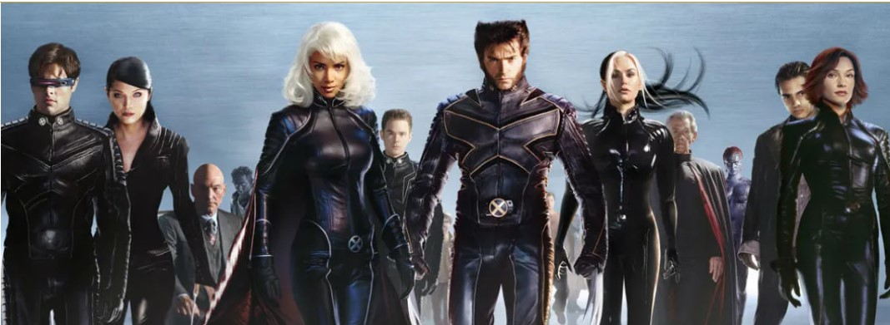
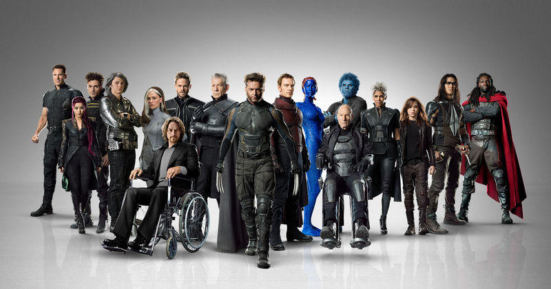

Marvel dünyasının en güçlü evrenlerinden biri olan X-men, birbirinden başarılı çizgi romanlara, filmlere ve dizilere sahip. Aksiyon dolu bir Marvel filminden daha heyecan verici bir şey yoktu. Ancak bu seride yeniyseniz X-Men filmlerinin izleme sırasını anlamak bunaltıcı olabiliyor. Bu nedenle akıllara gelen ilk soru ‘X-Men filmleri hangi sırayla izlenir?’ oluyor.
Çıkış Tarihine Göre Sıralama
X-Men filmleri ilk olarak bir üçleme şeklinde piyasaya sürüldü. Başarılı bir sonucun ardından ise 20th Century Fox, birbirinden farklı spin-off ve devam filmi için adım attı. Sonrasında birbirinden farklı filmlerin ortaya çıkması özellikle zaman çizelgesi açısından izlemeyi zorlaştırmaya başladı.
Zaman çizelgesinin karışık olması ve birçok filmin olması izleyicilerin de aklını karıştırıyor. Tüm bu detaylar bir araya geldiğinde de izleyiciler, filmleri çıkış tarihine göre izlemeyi tercih ediyor.

İşte çıkış tarihine göre X-Men filmleri izleme sırası:
X-Men (2000)
X-2 (2003)
X-Men: The Last Stand (2006)
X-Men Origins: Wolverine (2009)
X-Men: First Class (2011)
The Wolverine (2013)
X-Men: Days of Future Past (2014)
Deadpool (2016)
X-Men: Apocalypse (2016)
Logan (2019)
Deadpool 2 (2018)
Dark Phoenix (2019)
The New Mutants (2020)
Kronolojik Sıralama
X-Men filmleri eğlenceli ve aksiyon dolu olsa da fazlasıyla karmaşık olabiliyor. Özellikle zaman çizelgesi açısından son derece bulanık. Her şeyden önce filmlerin büyük bir kısmı geçmişe dönüşlere dayanıyor. Bu nedenle X-Men zaman çizelgesini tam olarak anlamak neredeyse mümkün değil çünkü filmler çelişkilerle dolu. Tüm bunlara rağmen X-Men filmlerini kronolojik sıralamayla izlemek isteyenler de var.

İşte kronolojik olarak Marvel izleme sırası:
X-Men: First Class
X-Men Origins: Wolverine
X-Men
X2: X-Men United
X-Men: The Last Stand
The Wolverine
X-Men: Days of Future Past
X-Men: Apocalypse
X-Men: Dark Phoenix
Deadpool
Logan
Deadpool 2
The New Mutants
Evet tüm bunlarla birlikte X-men evreninide bitirmiş bulunuyoruz. Şimdi dilerseniz gelmekte olan Marvel Filmlerine beraber bir göz atalım. Buradaki linkten ulaşabilirsiniz.